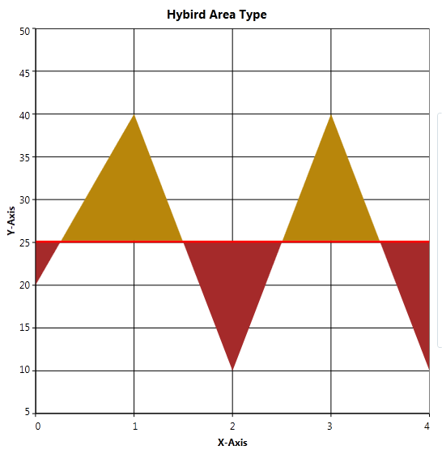

Essential Chart WPF now comes with the Custom Chart Type that allows users to customize the appearance of the graph thereby improving the look and feel of the chart. This is achieved by initializing the “Custom” enum value to the Type property of ChartSeries control and by adding the customized chart to the ChartType property of ChartSeries.
Use Case Scenarios
Users can draw a new chart type that is not available in Essential Chart WPF. Users can create a new HybirdAreaLine chart type, which is a combination of Area and Line chart types.
Adding Custom Chart Type to an Application
To set the Custom type feature in chart application:
1. Initialize the Custom Enum value to the Type property of ChartSeries control.
|
[Xaml] <syncfusion:ChartSeries Type="Custom" />
|
|
[C#] //Initialize Chart type as Custom chart.Areas[0].Series[0].Type = ChartTypes.Custom;
|
2. Create a new custom class, which should inherit the Segment abstract class.
3. Create another new custom class, which should be inherited by ChartType class and override the CalculateSegments method to customize the new chart type based on requirements.
4. In these CalculateSegments methods, add create new Segment object and add it to the Segments property of ChartSeries control.
|
[C#] public class HybridChartSegment : ChartSegment { public override void Update(IChartTransformer transformer) { //transformer.TransformToVisible method has used to convert actual Chart points into the pixel coordinates ……… } }
public class HybridChartType : ChartType { protected override void CalculateSegments(ChartSeries series, ChartIndexedDataPoint[] points) { …..
//Add the HybirdArea segment to the Chart Series series.Segments.Add(new HybridChartSegment(segmentPoints.ToArray(), points, series, hybirdIntersectLine)); ….. }
}
|
5. Create a new object for your own custom class and initialize it to the ChartType property of ChartSeries control.
|
[C#] //Inititalize the customized Hybrid Area line type to ther Series. chart.Areas[0].Series[0].ChartType = new HybridChartType(); |
6. Finally, define a Template design for your new custom chart type by initializing the Template property of ChartSeries control.
|
[XAML] <!--Hybird Area Line Type Template--> <DataTemplate x:Key="HybirdAreaLineType"> <Grid> <Grid Clip="{Binding Geometry}"> <Rectangle Fill="{Binding HighValueColor}"/>
<Rectangle Fill="{Binding LowValueColor}" Margin="{Binding HybirdMargin}" />
</Grid> <Line X1="0" Y1="0" X2="{Binding Series.Area.ActualWidth}" Y2="0" Margin="{Binding HybirdMargin}" HorizontalAlignment="Stretch" VerticalAlignment="Stretch" Stroke="{Binding LineColor}" StrokeThickness="5"/> </Grid> </DataTemplate> |
|
[C#] //Initialize the Template for HybirdArea Line type. chart.Areas[0].Series[0].Template = App.Current.Resources["HybirdAreaLineType"] as DataTemplate; |

Figure 169: Custom Chart Type
Sample Link
To run the UI Chart WPF samples:
1. On the dashboard, click the WPF Combo box and then select Run Locally Installed Samples. The WPF sample browser opens.
2. Select Chart.
3. Navigate to Chart Gallery -> Custom Chart Type demo.
4. Click the Run Sample button.
Or
1. Go to:
<<EssentialStudioInstalledLocation>>\Syncfusion\EssentialStudio\<Version>\WPF\Chart.WPF\Samples\3.5\WindowsSamples\Chart Gallery\ Custom Chart Type Demo
There are two folders namely C Sharp and Visual Basic. The user can choose the required folder.
2. Run the sample by opening the project file.